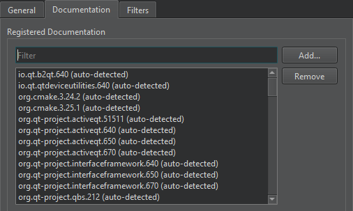

Add external documentation
You can display external documentation in the Help mode. To add documentation or replace the documentation that ships with Qt Design Studio and Qt:
- Create a .qch file from your documentation.
For information on how to prepare your documentation and create a .qch file, see The Qt Help Framework.
- To add the .qch file to Qt Design Studio, select Preferences > Help > Documentation > Add.

See also Get help.